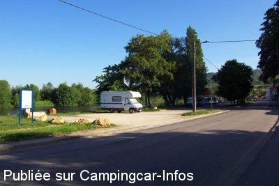

ASN = Aire de services avec stationnement nuit possible de :
MILLERY
(N° 179)
Accès/adresse :
Avenue de Moselle
54670 MILLERY
54670 MILLERY
Latitude : (Nord) 48.8159° Décimaux ou 48° 48′ 57′′
Longitude : (Est) 6.12701° Décimaux ou 6° 7′ 37′′
Tarif : Gratuit
Type de borne : Artisanale
Services :


Le boulanger passe vers 8 h.
Autres informations :
Ouvert d'avril à octobre.
5 emplacements
Tel : +33(0)383 249 643
Le 13/01/2007 par ynapapiiri

Le 13/01/2007 par ynapapiiri
Le 13/01/2007 par ynapapiiri
de
Youchris
le 21/09/2014 :
Effectivement air très agréable mais parasitè par les jeunes en voiture venant pour se faire remarquer et provoquer...musique à fond jusque plus de deux heures du matin..moteur ronronnant et crissement de pneus...insultes ...cris de provocation...nous ne repasserons pas...domage le site est très sympa.
Effectivement air très agréable mais parasitè par les jeunes en voiture venant pour se faire remarquer et provoquer...musique à fond jusque plus de deux heures du matin..moteur ronronnant et crissement de pneus...insultes ...cris de provocation...nous ne repasserons pas...domage le site est très sympa.
de
papyhub
le 28/07/2013 :
De passage en juillet 2013.
On a pêché depuis le ponton situé en contrebas.
C'était calme et un boulanger ambulant passe vers 9h30-10h, même le dimanche.
De passage en juillet 2013.
On a pêché depuis le ponton situé en contrebas.
C'était calme et un boulanger ambulant passe vers 9h30-10h, même le dimanche.
de
Patricia Laroche
le 17/08/2012 :
De passage fin juillet 2012, l'endroit est agréable mais il vaut mieux y arriver tôt sinon elle se sature très vite. Par contre il est à déplorer le bruit des jeunes avec leurs scooters jusqu'à 2 h du matin. Dommage , impossible de bien se reposer.
De passage fin juillet 2012, l'endroit est agréable mais il vaut mieux y arriver tôt sinon elle se sature très vite. Par contre il est à déplorer le bruit des jeunes avec leurs scooters jusqu'à 2 h du matin. Dommage , impossible de bien se reposer.
de
annie rachart
le 07/06/2011 :
en effet cette aire est tres bien agencée mais dommage que les jeunes villageois viennent sur cette aire et sois si bruyants jusqu'a des heures tardives (minuit)sinon cet endroit est tres agréable
en effet cette aire est tres bien agencée mais dommage que les jeunes villageois viennent sur cette aire et sois si bruyants jusqu'a des heures tardives (minuit)sinon cet endroit est tres agréable
de
youp,belg
le 11/05/2009 :
De passage fin avril, très belle aire de repos, belle initiative de la municipalité. MERCI !
De passage fin avril, très belle aire de repos, belle initiative de la municipalité. MERCI !
de
D
le 18/11/2007 :
Nous avons fait halte plusieurs fois en partant aux sports d'hiver. Endroit très calme et c'est GRATUIT. Bravo à la municipalité.
Nous avons fait halte plusieurs fois en partant aux sports d'hiver. Endroit très calme et c'est GRATUIT. Bravo à la municipalité.
de
Herman Struyf HoveBelgique
le 26/09/2005 :
J'y suis passé à plusieurs reprises déjà. Initiative impeccable de la part d'un tout petit village où, malheureusement, il n'y à même pas de boulanger. Mais l'aire de CC... Que beaucoup de villes prennent exemple!
J'y suis passé à plusieurs reprises déjà. Initiative impeccable de la part d'un tout petit village où, malheureusement, il n'y à même pas de boulanger. Mais l'aire de CC... Que beaucoup de villes prennent exemple!